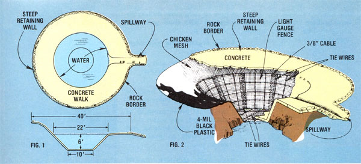
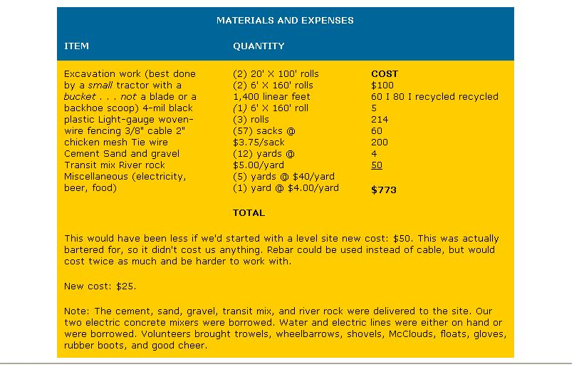

You Can Build A Concrete Pond In Your Back Yard (And Have Agreat Time Doing It)!
By the Mother Earth News editors
July/August 1978
You can have that homestead pond . . . even if your soil is too porous to hold water. "All you have to do," says Garberville, California's Ruthanne Boggs, "is make a big depression in the ground . . . and have about two dozen friends help you line it with concrete!"
Last year at this time here in northern California, there was a severe drought . . . or so I'm told. While other folks were cutting down on the number of baths they took and letting their garden plants wither in the blazing summer sun, I was irrigating my vegetables freely and frequently ... using the water that was stored in our 6'deep by 40'-wide "built it ourselves" concrete pond.
Now I admit, digging a 10,000-or 15,000-gallon hole in the ground and lining it with four inches of concrete is an ambitious undertaking. But it can be done (and, perhaps, should be done if you need extra water for irrigation, aquaculture, swimming, or firefighting). All it takes is some advance planning, $600 to $800 in materials, and a little help from 15 or 20 friends.
BEGIN WITH A LEVEL SITE
Ideally, you should plan to have your pond dug with a front-end loader, rather than a backhoe (which will leave a rough surface that must be smoothed out by hand) ... and if the site isn't level, it should be graded first. After that you can dig your pond in whatever shape the lay of the land allows. Our pond (see drawing) has a generally ovoid cross section, with a flat bottom and sides that slope at 45° (except near the top, where they flatten out to an incline of only 10°).
When the excavation work is completed, survey your private "water hole" carefully and level its rim with itself all the way around, then make a slight dip in the edge where the overflow or spillway is to be. We didn't do this as carefully as we should have, and-as a result-our minilake's overflow is nearly a full foot lower than the rest of the pond's rim. (This seems like a waste of concrete and space now, because a good deal of surface area near the spillway never even gets wet . . . except during a rain.) On the side of the pond opposite the overflow, there's a slight hill (see drawings) against which we built a sort of retaining wall. (This wall-like the excess concrete area around the spillway-helps funnel extra water into the pond during a rainstorm.)
Be sure, too-when excavation is complete-to remove all loose dirt from the freshly dug hole. This was easy enough for us to do: The tractor driver we hired was more than happy to [1) leave his tractor at the bottom of the pit, with the boom down, while we shoveled dirt into the bucket . . . then [2] drive around the top of the pond to pack down any remaining loose soil. When he was done, we took still more dirt out by hand (in pails) and smoothed out rough spots before wetting and tamping down the loose fill along the 'pond's rim.
WALL REINFORCEMENTS
To strengthen our pond's walls (and give the wet concrete something to "grab onto"), we lined the entire excavated area with 4-mil plastic, then laid down light gauge woven wire fencing (which we bought cheap as "seconds") in 6'-wide rows that overlapped each other by six inches. (At the overlap, we bound the segments of fencing together with tie wires spaced eight inches apart.)
Next, we circled the perimeter of the water hole with 3/8" cable and laid a 2' X 2' grid of the cable across the excavated area (see drawings). Then we tied the cable to the underlying sections of fencing. (This tying job-and the one before-occupied two people more or less full time for four days.) Reinforcing rods (rebar) could have been substituted for the cable, but it would've been a harder material to work with because of its stiffness.
Finally, a layer of 2" chicken mesh was rolled out over the pond's steep, sloping sides (overlapping the fencing and cable already laid down) as further concrete reinforcement. (This job is best done-we found-with the aid of a couple of friends, since maneuvering heavy rolls of fencing along the pond's steeply inclined sides calls for a lot of muscle.)
PARTY TIME
At last, we were ready for the really fun part of our project . . . the day-long "concrete party". To prepare for the festive get-together, electric concrete mixers were brought in . . . waterlines were set up . . . electric extension cords (to power the mixers) were laid ... river rocks were hauled to the site . . . 10 yards of sand and gravel-and 50 sacks of cement-were delivered ... and arrangements were made for 10 very dry yards of transit mix (Redi-Mix) to be trucked in. Last-but not least-a number of our good friends were invited over.
By 7:00 a.m. on the appointed day, my man and I were thoroughly keyed up for some long hours of hard work and good company. In the silence of the morning, we stood by the strange-looking plasticand-wirelined crater we'd made and said a little prayer. Then-with the arrival of the first four volunteers-we started the first mixer.
We began with a mix consisting of four and a half shovels of gravel and sand to one shovelful of cement (six sacks of cement to the yard), with enough water to give a stiff mix. (And by stiff, I mean concrete dry enough to sit in a heap when placed on a 45° incline.)
The first wheelbarrow load went down the steepest of the pond's four sides. We spread the concrete fairly thickly across the surface of the wire/cable/mash grid, then reached down and pulled the wire up through the first two inches of the mix before slapping the sludge with the backs of our shovels to remove trapped air.
As more concrete was poured, we started raking it down with "McClouds", that is, rakes with tape applied over their prongs. And so it went: Cover a small area with two inches of concrete, pull the underlying wire through to the top, layer another two inches of mix over the wire, and smooth the surface out with small hand floats. A steady pattern quickly developed.
Pretty soon, more smiling faces arrived and a second mixer was started up. We continued to pour concrete, concentrating our efforts on the three sides of the pond which were farthest from the road where the transit-mix truck would eventually stop to pour its load. (Again, it was two inches of concrete below the wire, two inches above.) One of our new helpers-bless him-brought along a "bull float" (an extra-large float with a long handle). We were amazed at how quickly the bull float could smooth out those 4"-thick walls compared to the smaller hand floats we had started with.
WAITING FOR THE TRANSIT MIX
As the hot sun climbed high in the sky, shadows began to disappear from the pond. The morning grew old. It was time for the transit-mix truck to arrive . . . but it didn't show up.
Most of the work crew (about 20 of us) took a break for sweet rolls, coffee, and a rest in the shade. A few folks, however, continued to mix and pour and smooth what little concrete was left in a rather forlorn attempt to finish the pond off with our dwindling materials.
Then, just as our sand and gravel supplies gave out, the transit-mix truck arrived! A cheer went up and four or five helpers donned rubber boots (required apparel for this kind of work), grabbed their rakes and shovels, and galloped down to the bottom of the excavation. The rest of us looked on as the truck driver prepared to unload his cargo. (At this point, we really began to appreciate having a road so close to the pond.)
Because we'd been warned in advance that transit-mix people like to make very wet concrete (it's supposed to be easier on their equipment), we were quite adamant in asking for a stiff mix when we placed our order. What we asked for and what we received, however, were two very different things: The stuff that came out of the truck's chute had the consistency of split-pea soup! We watched in horror as the concrete slid down the side of our excavation and formed a mushy pool in the bottom.
Some workers sloshed through the mess, trying to work the muck back up onto the pond's sloping sides ... others lined up at the truck with wheelbarrows to collect a load of concrete to cart to the other side of the pond, where a gently sloping walkway had yet to be poured. As OI' Sol reached-and passed-his peak in the sky, we scurried to move the mush up the sides, leaving a 6"-thick layer in the bottom of the pond. Wheelbarrows whizzed back and forth!
We had ordered 10 yards of concrete but-luckily for us-the mix truck held only five. We promptly canceled the second load and-in its place-ordered more sand, gravel, and cement. (We still had one more corner to finish.) All of us vowed that if we ever built another pond, we'd plan on mixing every bit of the concrete ourselves.
FINISHING TOUCHES
A late lunch was served while everyone waited for the delivery of the extra sand, gravel, and cement. Meanwhile, some of us took to breaking up old ceramic pots (donated by some potter friends) and placing the fragments (sharp ends down) in the still-wet walkway to form some really attractive mosaics.
Also-while we were waiting for the extra supplies-some of us made a border of river rocks along the edge of the walkway. First, we built up a base of wet concrete . . . then we set wet (for better concrete adhesion) stones down into this raised foundation, smoothed the mix around the rocks with hand trowels, and (after an hour or so) washed the stones with a plastic dishscrubber to remove any concrete residue.
Next, after lunch (and the arrival of new materials), we finished up the corners of the pond using our own superior handmixed concrete. Care was taken to form a nice, smooth spillway at the lowest point on the pond's rim.
After that, to seal the surface of our "concrete crater", we made up a 1:6 cement/water paste, then either [1] brushed the paste on and troweled it smooth, [2] poured it down the sides of the pond and then brushed it out, or [3] threw the goop on hurriedly (which was definitely a mistake, since the force of the paste hitting the still-damp concrete tended to produce a rough and rocky finish). Periodically, someone would very gently hose down any area that seemed to be drying out too quickly.
Finally-as the sun peeped through the treetops for the last time-the last few rocks were placed around the pond's rim, black plastic was spread over the pit's
40' X 40' surface, and tired workers left for their homes.
The next morning, we spread large canvas tarps over the pond to keep it from drying too quickly over its three-day curing period. And several days after that, the canvas (and plastic) came off and we started filling the pond with water pumped from a nearby creek.
POND MAINTENANCE
Our pond tends to gather leaves easily, and so needs to be skimmed quite often . . . but, except for that, the 15,000-gallon reservoir has needed very little maintenance. We plan to drain and clean it this coming spring.
Once-after water had stood in the mini-lake for several particularly warm weeksmosquito larvae began to appear . . . but according to the folks down at the county Health Department, this wouldn't have happened if we'd made the pond's sides slope more steeply (say 80° or 90°). The Health Department gave us some mosquitofish, and shortly thereafter the insect problem vanished. (The fish are still thriving.)
All things considered, we couldn't be happier with our pond. The luxury of being able to take a quick, refreshing dip on a scorcher of an afternoon, the beauty of our own fish darting about in their 15,000-gallon home, and the joy of knowing that we'll never have to worry about a drought affecting our crops make every drop of sweat (and every penny of savings) we put into our pond's construction worthwhile. (In late August-when our normal source of water becomes undependable-we can just turn a valve and siphon water out of our reservoir for irrigation.)
A pond is a beautiful, flowing thing . . . not at all unnatural looking, even if it is "man-made" (and even when it's constructed of concrete). Every time I look at our reservoir, I'm impressed by its beauty ... and reminded of the many loving hands that made it possible.
Walden it's not ... but I like my little pond just the same. In fact, I don't know what I'd do without it!
|
 PHOTO BY JOANNE AND QUENTIN H. BASSET |
 |
 |